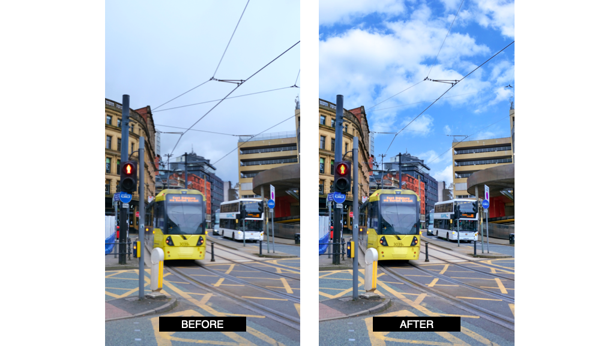

I wanted to tell the story with my five chosen pictures, attempting to incorporate several different elements into an aesthetically pleasing whole. I used both my phone and a DSLR camera, with the phone being used for short shots and unplanned pictures and the DSLR being used for planned shots with more time for artistic control over the result. The interest in my first photograph, "The Face Of Wisdom," is drawn to the patterns and texture between the brick floor, tile building, and graffiti, which, when combined with the colourful background buildings, produces a visually appealing photograph that suggests harmony. I decided to fill the frame with a subject in the second picture, "PinkIsh," leaving little or no room around it, and without much distraction. The Pink Building in a Brick City is the focal point of this photograph. The rule of odds was applied to the third photo, "Red Brick Building Shudehill." According to O Carroll (2016), a picture is more eye catching if there are an odd number of participants, and in this photo, I have one subject that is less distracting and more natural to the human eye. On the fourth and fifth photo “Almost in St Peter’s Square” and “What If The Sun Was Shining” respectively, you will see depth and leading lines. I used a higher ISO value to deal with the low light since these images were all taken on the same day, a gloomy rainy day. A quick shutter speed was used in some photos to catch elements in motion, such as in pictures 3 and 5. Also, I need a larger aperture to let more light into the sensor, which is necessary if I want to keep the shutter speed high.

What If The Sun Was Shining
I used the Adobe Photoshop Camera software to edit the sky in this picture and give it a more sunny appearance.
Video Production Basics
We wanted to do a more relaxed and inclusive piece in the video group work. To appeal to the target age group and maintain the MOTDx vibe, we chose the first "free" day after the lockdown, when pubs and non-essential shops were open, and Manchester and the rest of England were ready to enjoy the day outdoors. We wanted to capture that, as well as the emotions that went along with it. Our show was named "Street Talk." The show's hosts, Damon and Humayra, approached random people in a good mood and asked them a few questions about football and their feelings in general during this major global issue. We shot in a variety of locations, but the majority of the images are from Alexandra Park in Moss Side, Manchester. Our cameraman was Jakob, and we wanted to shoot in 16:9 television ratio with a JVC Ultra HD camera. Unfortunately, we run into technical difficulties with the image's exposure and framing. Since it was a sunny day, the ISO should have been set lower to avoid overexposed material. What this means is that image quality will affect whether or not anyone wants to watch our content, “A high-quality video lets your viewers know that you’re capable of creating content to persuade them.” Bussinesstown (2021) Judith and I were the directors, and we filled out the call sheet and the location filming risk assessment, as well as organising the day and all of the participants, in order to get it completed on time and safely. Our key task was also to form the production's vision, including which camera angles to use and how to translate the paper concept into film.
Social Media Delivery Formats
We used YouTube to present our broadcast video, which had a widescreen aspect ratio of 16 units and a height of 9. It is the most common aspect ratio for televisions and computer monitors, as well as the international standard digital television format HDTV Full HD and SD TV. We decided to make the video in a 4:3 (vertical) aspect ratio for our social media format, which fits perfectly on instagram, for example. Instagram's video formats are divided into three categories: landscape, square, and vertical. It's important to keep it short and appealing; the first few seconds are critical in capturing the viewer's interest, and it shouldn't last more than 30 seconds. When it comes to formatting our video, the most difficult decision we'll have to make is which part is the most appealing, significant, and will generate the necessary engagement. In a video marketing statistics study done in 2020 by Ahmad, we can see that video content is generating more usage and interaction than any other form of content, on multiple social media platforms.
Bibliography
Ahmad, I., 2019. Video Marketing Statistics for 2020 [Infographic]. [online] Social Media Today. Available at:
Business Town. 2021. The Importance of Quality Online Video Marketing. [online] Available at:
O Carroll, B., 2016. 20 Composition Techniques That Will Improve Your Photos. [online] PetaPixel. Available at: